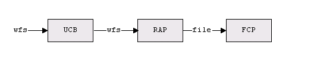

The File Content Provider (FCP), a Content Provider for the Universal ContentBroker (UCB), provides access to the local file system. It does this by providing file content objects, which represent either a directory or a file in the local file system. The FCP is able to restrict access to the file system to a number of directories shown to the client under configurable aliases.
The FCP provides content representing either a Directory or File in the local file system.
A directory contains other directories or files.
A file is a container for document data/content. The FCP is not able to determine the MediaType property of a file content.
A content representing directories implements the interface XContentCreator. A file content object supports the command „insert. To create a new directory/file in a directory:
Let the parent directory create a new content by calling its createNewContent method. The content type to use for new folders is application/vnd.sun.staroffice.fsys-folder. To create a new file, use the type string application/vnd.sun.staroffice.fsys-file. As return value you get a new file content object.
Set a title at the new file content object. ( Let the new child execute a setPropertyValues – command, which sets at least the property„Title to a non-empty value ).
Let the new file content object ( not the parent! ) execute the command „insert“. This will create the corresponding physical file or directory. For files, you need to supply the implementation of an XInputStream with the command's parameters, that provides access to the stream data.
Each file content has an identifier corresponding to the following scheme:
file:///<path>
where <path> is a hierarchical path of the form
<name1>/<name>/.../<name>.
The first part of <path> ( <name1> ) need not denote a physically existing directory, but may be re-mapped to such a directory. If this is done, the FCP refuses file access for any URL whose <name1>-part is not an element of a predefined list of alias names.
In the Sun ONE Webtop, the server side file system is addressed with vnd.sun.star.wfs URLs (wfs stands for Webtop File System), while the file URL scheme is reserved for a potential client side file system.
In that scenario, a trick is used to completely hide the vnd.sun.star.wfs URL scheme from the FCP (i.e., the server side FCP internally works with file URLs, just like any other FCP): There is a special Remote Access Content Provider (RAP) between the UCB and the FCP. That RAP, among other things, can route requests to another UCP and rewrite URLs "on the fly." This feature is used here, so that the client of the UCB works with vnd.sun.star.wfs URLs and the FCP remains unmodified and works with file URLs, with a RAP in between that maps between those two URL schemes:

Except
for the different scheme name, the syntax of the vnd.sun.star.wfs URL
scheme is exactly the same as that of the file URL scheme.
The following table gives an overview of the different properties of file contents and the supported commands and interfaces.
|
|
UCB Type (returned by XContent::getContentType ) |
Properties |
Commands |
Interfaces |
|---|---|---|---|---|
|
File |
application/vnd.sun.staroffice.fsys-file |
[readonly] ContentType DateModified [readonly] IsDocument [readonly] IsFolder Size Title IsReadOnly IsVolume IsRemoveable IsRemote IsCompactDisc IsFloppy IsHidden |
getCommandInfo getPropertySetInfo getPropertyValues setPropertyValues insert delete open transfer
|
lang::XServiceInfo lang::XComponent ucb::XContent ucb::XCommandProcessor beans::XPropertiesChangeNotifier beans::XPropertyContainer beans::XPropertySetInfoChangeNotifier ucb::XCommandInfoChangeNotifier container::XChild ucb::XContentCreator |
|
Directory |
application/vnd.sun.staroffice.fsys-folder |
[readonly] ContentType DateModified [readonly] IsDocument [readonly] IsFolder Size Title IsReadOnly IsVolume IsRemoveable IsRemote IsCompactDisc IsFloppy IsHidden |
getCommandInfo getPropertySetInfo getPropertyValues setPropertyValues insert delete open
|
lang::XServiceInfo lang::XComponent ucb::XContent ucb::XCommandProcessor beans::XPropertiesChangeNotifier beans::XPropertyContainer beans::XPropertySetInfoChangeNotifier ucb::XCommandInfoChangeNotifier container::XChild
|